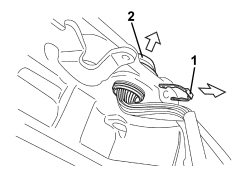
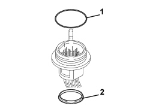
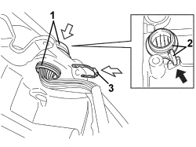

2135B58 ELECTRONIC AUTOMATIC TRANSMISSION SYSTEM WIRING - R.R.
- Path
- Procedures > 21 GEARBOX UNIT > 2135 AUTOMATIC TRANSMISSION EXTERNAL CONTROLS > 2135B AUTOMATIC TRANSMISSION ELECTRICAL CONTROLS > 2135B58 ELECTRONIC AUTOMATIC TRANSMISSION SYSTEM WIRING - R.R.
- Kind
- repair procedure (removal / refitting; the operation number is the code)
- Applies to
- engines: 3.2 JTS; all production periods
- Interactive page
- https://sloeber94.github.io/elrnDB-aBrrSpdr/en/#/946004469
Applies to: engines: 3.2 JTS; all production periods
 Removing
Removing
 Refitting
RefittingOp. 5530B52 BATTERY SUPPORT/DRIP TRAY - R.R
Op. 2135B52 ELECTRONIC AUTOMATIC TRANSMISSION ELECTRIC CIRCUIT -ECU MOUNT - R.R.
Op. 7055B54 UNDER ENGINE PROTECTION/GUARD - R.R.
Op. 0010T20 ENGINE COOLANT - CHANGE
- Drain the automatic transmission fluid, refer to
Op. 0010T44 CHANGE AUTOMATIC TRANSMISSION FLUIDS
Op. 2130B36 AUTOMATIC TRANMISSION VALVE COVER R R
1. Detach electrical connections for solenoids (1a) and the timing sensors (1b).
2. Open the wiring retaining clips.

Applies to: engines: 3.2 JTS; all production periods
1. Remove the connector for the gearbox output rpm sensor from the retaining clip.

Applies to: engines: 3.2 JTS; all production periods
1. Remove the connector for the gearbox input rpm sensor from the retaining clip.

Applies to: engines: 3.2 JTS; all production periods
1. Undo the bolt (1a), keep the locking plate (1b) and then remove the oil temperature sensor (1c) from the valve assembly.

Applies to: engines: 3.2 JTS; all production periods
1. Remove the gearbox wiring connector retaining clip.
2. Lift up the connector and remove the wiring from the special opening in the gearbox casing complete with gaskets.
- Remove the gaskets from the connector and from the gearbox wiring.

Applies to: engines: 3.2 JTS; all production periods
Refitting
Removing1. Fit a new O-ring on the gearbox wiring connector.
2. Place a new gasket underneath the gearbox wiring connector.

Applies to: engines: 3.2 JTS; all production periods
1. Position the wiring passing it through the special opening in the gearbox casig, taking care not to damage the connectors and the electrical wires.
2. Position the connector as illustrated.
3. Fasten the connector to the gearbox casing using the retaining clip.

Applies to: engines: 3.2 JTS; all production periods
- Grease the temperature sensor O-ring with transmission fluid.
1. Fit the transmission fluid temperature sensor (1a) and the plate (1b) and tighten the bolt (1c) to the recommended torque.

Applies to: engines: 3.2 JTS; all production periods
1. Position the connector (1a) for the gearbox output rpm sensor as illustrated in relation to the valve wiring (1b) and secure it to the retaining clip (1c).

Applies to: engines: 3.2 JTS; all production periods
1. Position the connector (1a) for the gearbox input rpm sensor as illustrated in relation to the valve wiring (1b) and secure it to the retaining clip (1c).

Applies to: engines: 3.2 JTS; all production periods
- Connect electrical connections for solenoids and the timing sensors.
- Close the wiring retaining clips.
Op. 2130B36 AUTOMATIC TRANMISSION VALVE COVER R R
Op. 2135B52 ELECTRONIC AUTOMATIC TRANSMISSION ELECTRIC CIRCUIT -ECU MOUNT - R.R.
Op. 5530B52 BATTERY SUPPORT/DRIP TRAY - R.R
- Refill and top up the automatic transmission fluid level, refer to
Op. 0010T44 CHANGE AUTOMATIC TRANSMISSION FLUIDS
Topics linked from this page (9)
- 0010T20 ENGINE COOLANT - CHANGE
- 0010T44 CHANGE AUTOMATIC TRANSMISSION FLUIDS
- 2130A38 AUTOMATIC TRANSMISSION FLUID HEAT EXCHANGER - R + R - INCLUDING LEVEL TOP UP IF NECESSARY
- 2130B36 AUTOMATIC TRANMISSION VALVE COVER R R
- 2135B52 ELECTRONIC AUTOMATIC TRANSMISSION ELECTRIC CIRCUIT -ECU MOUNT - R.R.
- 5530B10 BATTERY - R+R
- 5530B52 BATTERY SUPPORT/DRIP TRAY - R.R
- 7055B54 UNDER ENGINE PROTECTION/GUARD - R.R.
- 7210E10 R.R. FRONT BUMPER